板橋樂團班｜兒童樂團、親子樂團，一起練合奏
想讓孩子在板橋組一個樂團？慕尼克音樂板橋校區的樂團班，把吉他、Bass、爵士鼓、鍵盤和歌唱放進同一首歌，大家一起練合奏，也試著即興。爸爸、媽媽也可以加入親子樂團，和孩子在同一個舞台上演奏。教室就在國光國小對面，一堂課 50 分鐘。
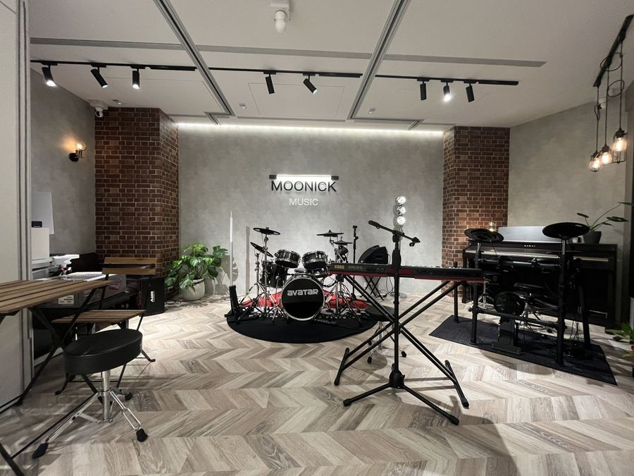
樂團班在做什麼？
一個人練琴，練的是自己的部分；進了樂團，要學的是「聽別人」。鼓穩住拍子，Bass 接住低音，吉他和鍵盤鋪和弦，主唱把旋律唱出來。每個人都要知道現在唱到哪裡、下一段誰先進來，一首歌才會完整。
板橋兒童樂團：先把一首歌合起來
- 挑一首大家都喜歡的歌，分配每個人的樂器和段落
- 練前奏、主歌、副歌的銜接，學會一起開始、一起結束
- 練習聽彼此的聲音，音量和速度跟著整個樂團走
- 練熟之後，有機會在板橋校區的成果發表上台演出
合奏課裡的即興
歌合得起來之後，老師會留一點空間讓孩子試著即興：在固定的拍子和和弦上，自己變化一小段節奏或旋律。不用一次就很好聽，先敢試，再慢慢找到自己的聲音。慕尼克的老師也鼓勵孩子玩即興和創作。
帶樂團的老師
板橋樂團班由慕尼克的樂團老師帶。老師本身會好幾種樂器，也能唱，排歌時會把每樣樂器和人聲安排在一起，讓整個樂團聽起來是一首歌，而不是各彈各的。他有創作能力，是一位製作人，寫歌的經驗非常多，到現在累積的作品已經超過兩百首。
板橋親子樂團：爸媽和孩子一起上場
慕尼克有親子樂團。爸爸、媽媽可以和孩子編在同一個樂團裡，一起練、一起演奏。孩子可能在打鼓、彈吉他，爸媽也拿起一樣樂器，或站到麥克風前面。你會更清楚孩子在練什麼，也多了一段一起完成一首歌的回憶。
親子樂團怎麼報名、時段怎麼排，請在官方 LINE 詢問。
樂團班上課方式
板橋樂團班一般建議 6 歲以上的孩子參加；也有 5 歲的孩子順利加入的例子。每個孩子的狀況不一樣，可以先加入官方 LINE，讓老師幫你評估。樂團班是和同伴一起上的團體課，依報名狀況開班。還沒學過樂器的孩子，可以先從爵士鼓、吉他、鋼琴（鍵盤）、Bass 或歌唱的個人班打底；已經在學的孩子，可以問老師目前適不適合進樂團。
一堂課 50 分鐘，一期 12 週。依規定請假，一期可以補課 3 次。學費與時段：請來電或加 LINE 詢問。
練團的空間
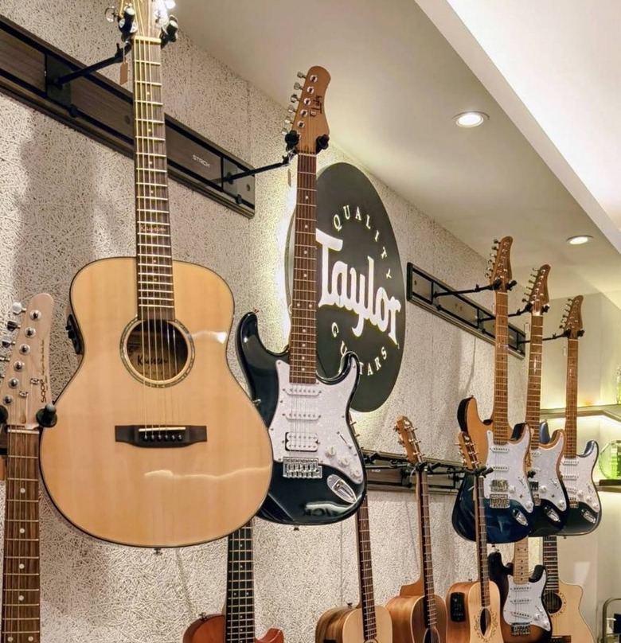
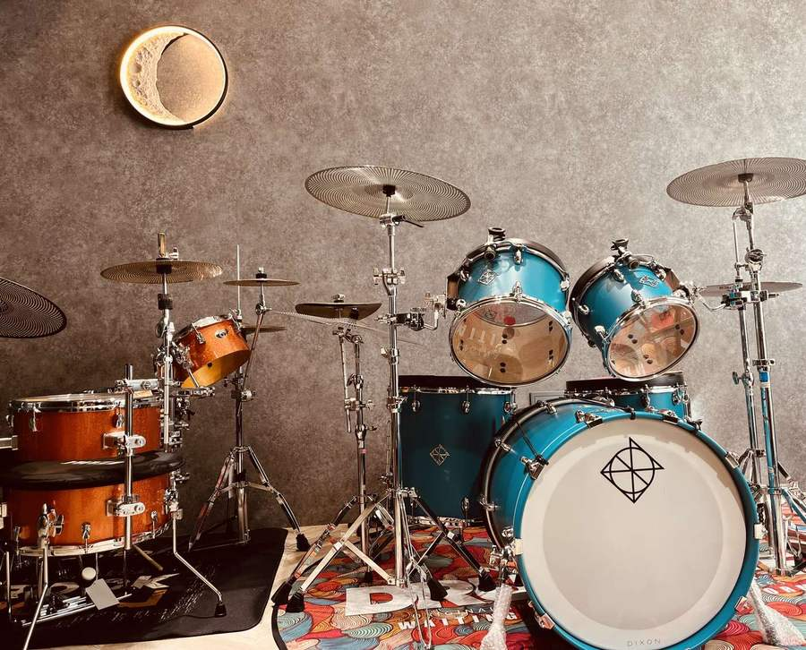
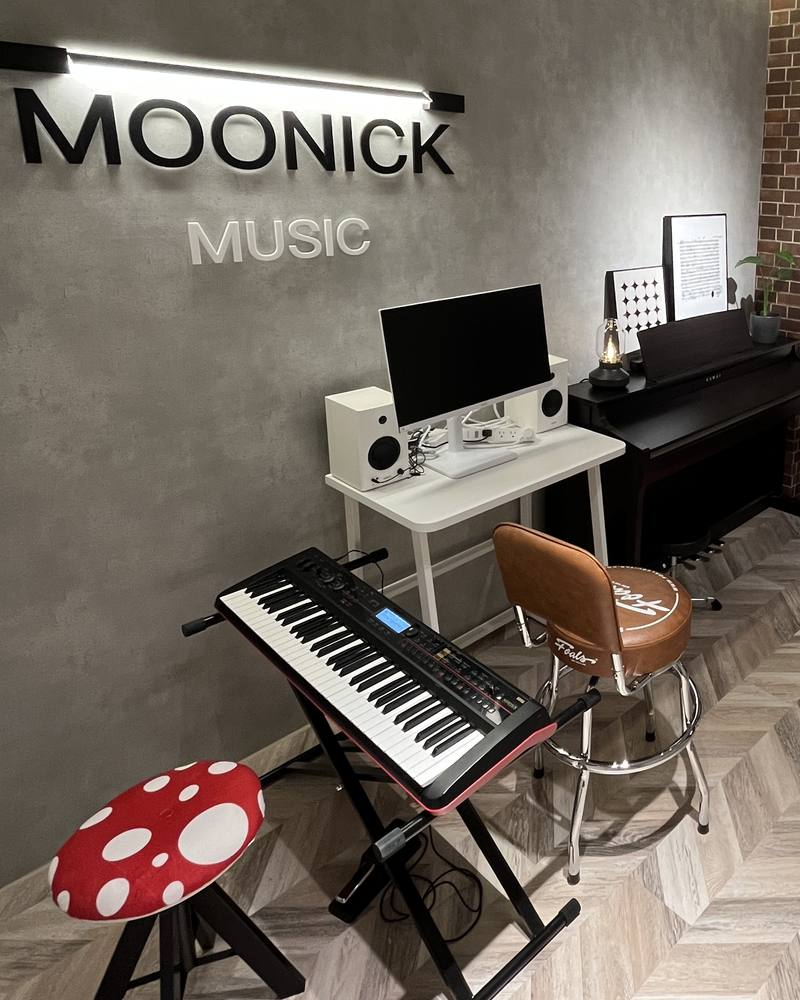
上課照片
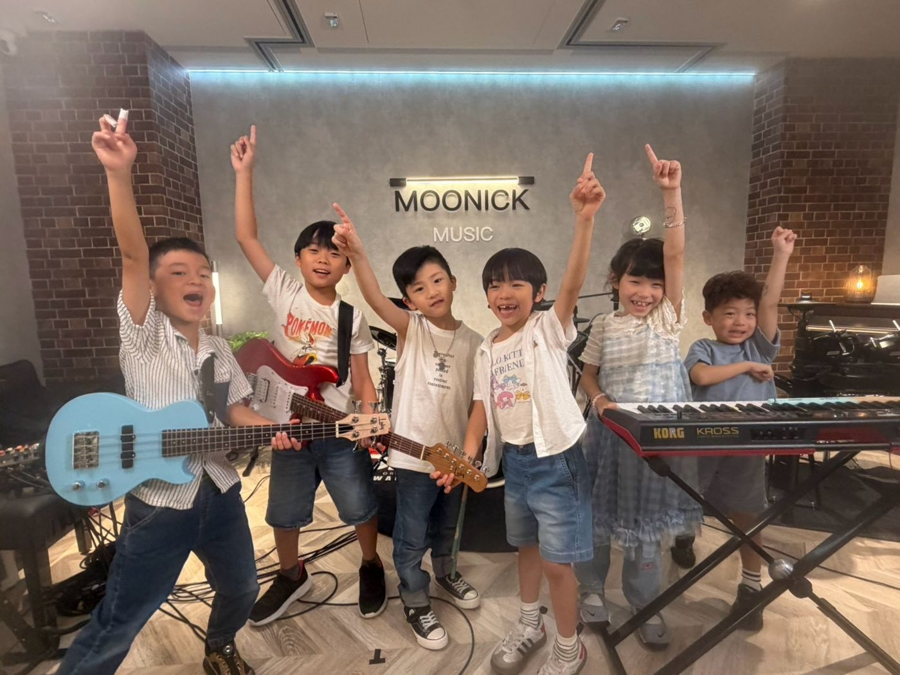
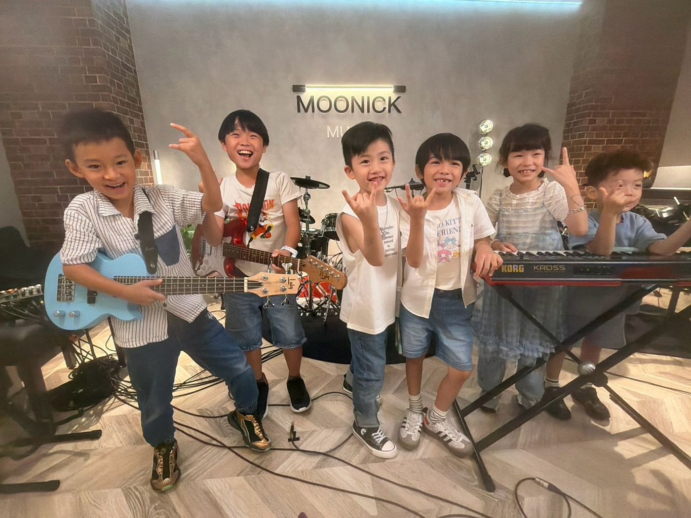
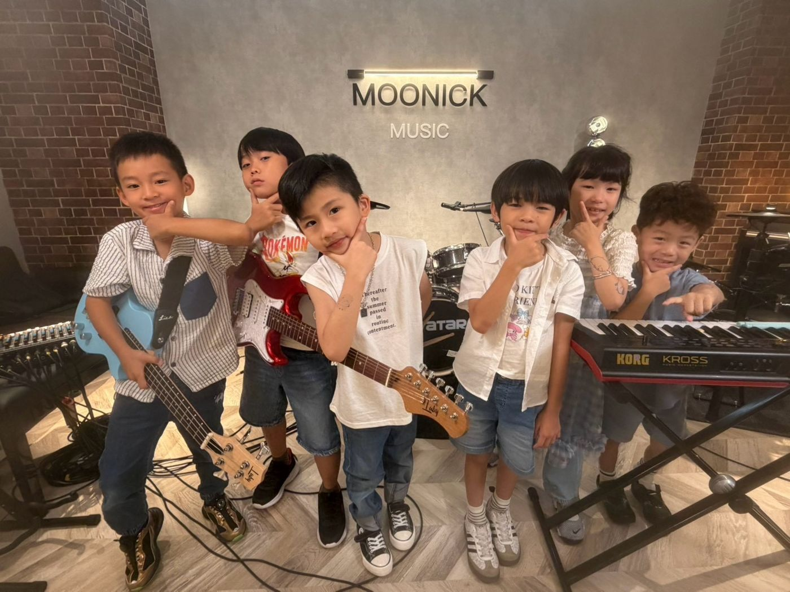
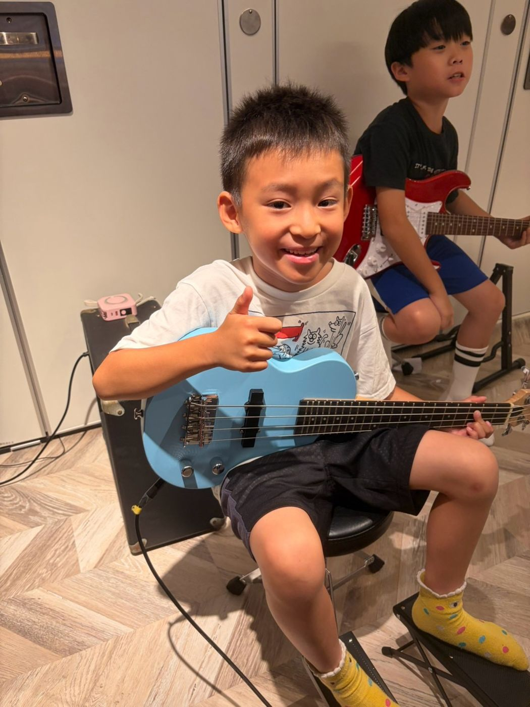
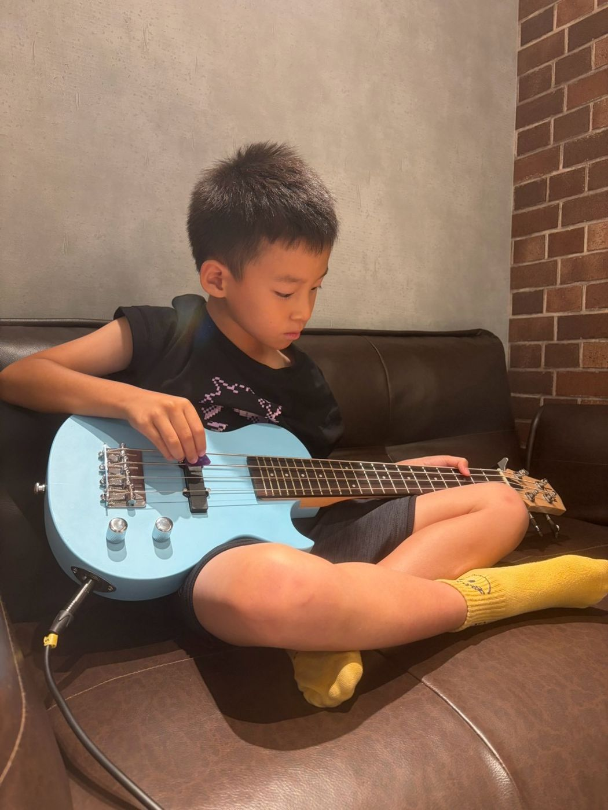
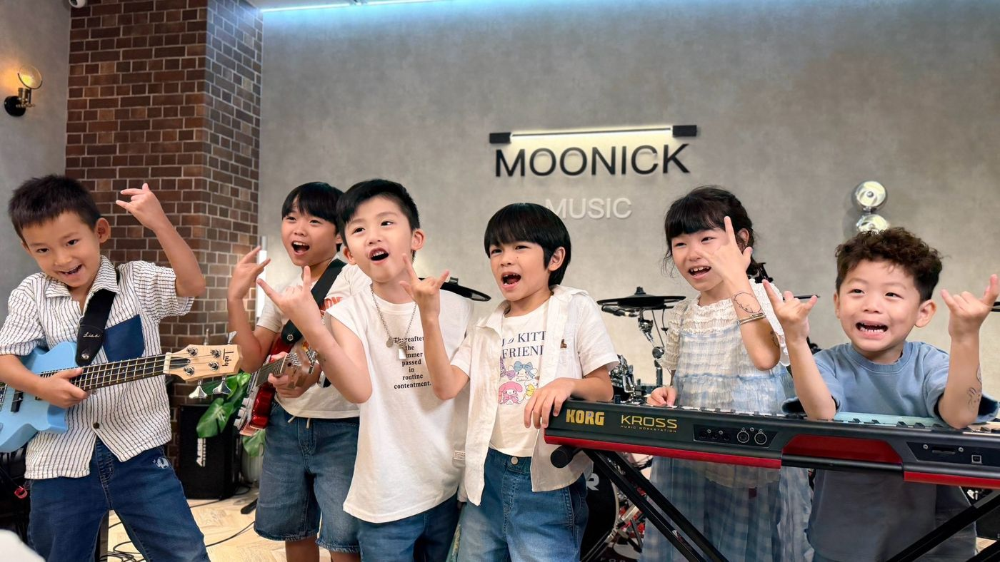
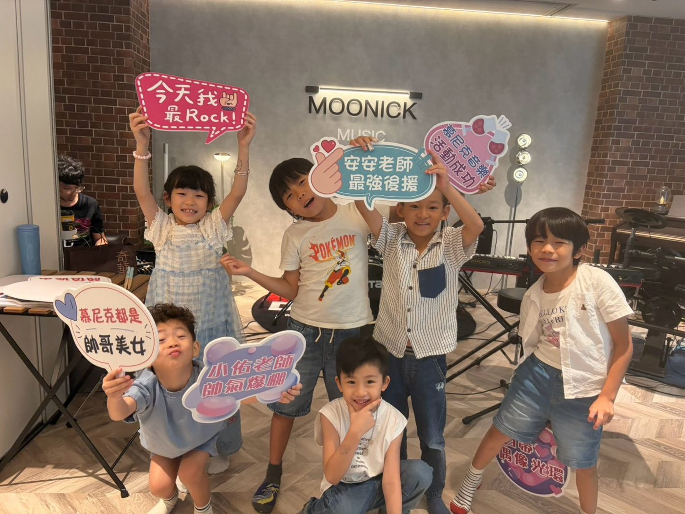
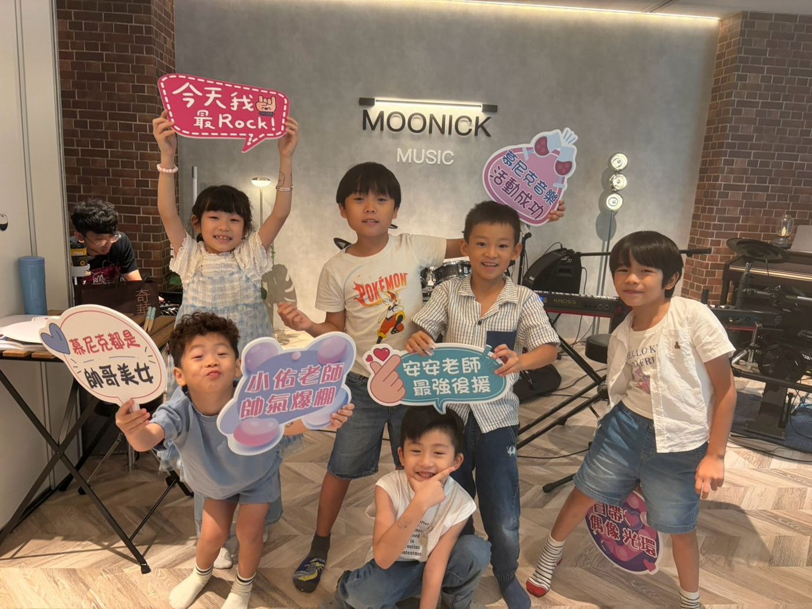
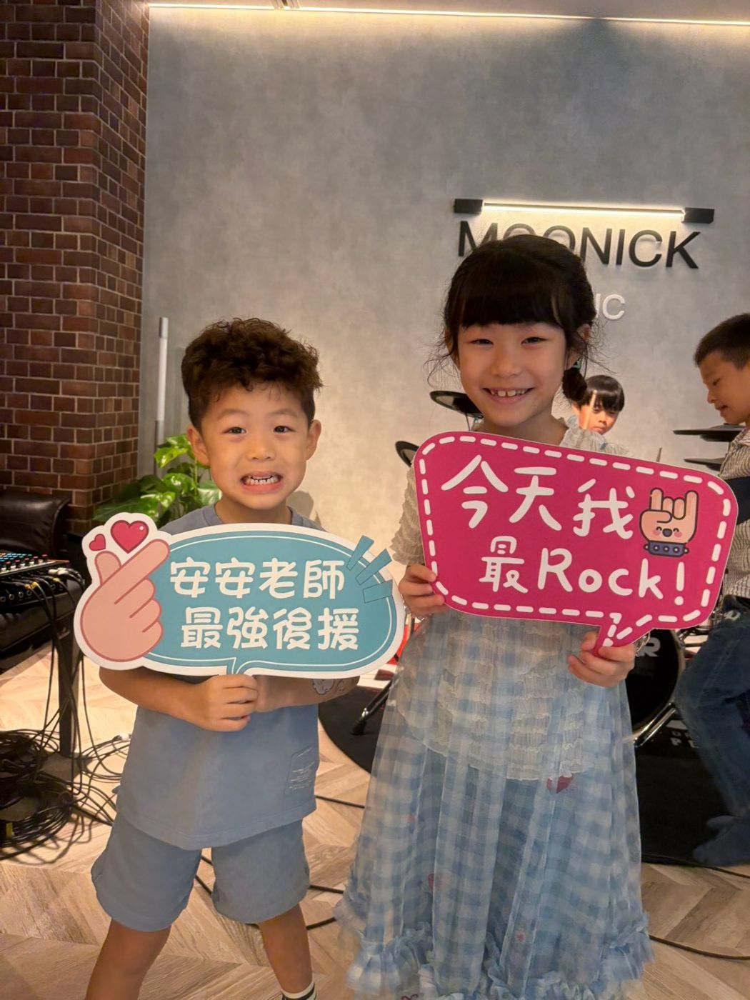
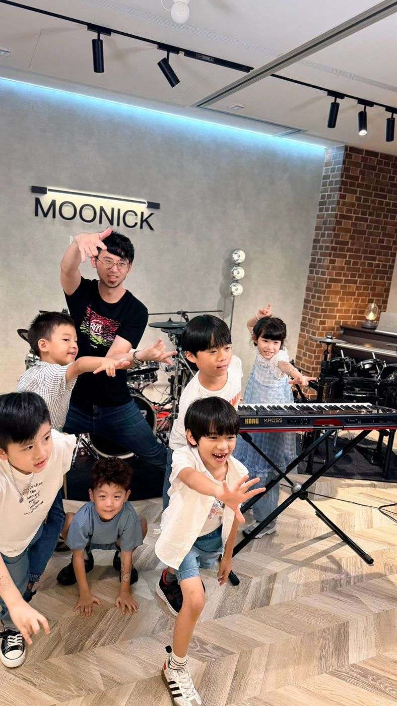
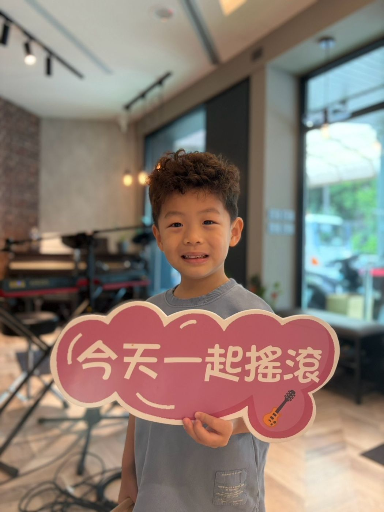
上課地點與時間
地址：新北市板橋區中正路325巷47號1樓（國光國小對面）
營業時間：週三、四、五 16:30–22:00；週六、日 13:00–22:00；週一、二公休
交通：公車搭「307」到「港尾」站，步行約 3 分鐘；捷運板橋站約 1.1 公里，騎 YouBike 約 5–7 分鐘。
停車：Times 中正路停車場（步行約 2 分鐘）、國光公園日月亭停車場（步行約 4 分鐘）。
想先了解單一樂器，可以看板橋爵士鼓課、板橋吉他課、板橋鋼琴課、板橋 Bass 課、板橋歌唱課。
常見問題
孩子幾歲可以上樂團班？
一般建議 6 歲以上。也有 5 歲就順利加入的孩子，要看每個孩子的狀況；可以加入官方 LINE，讓老師評估。
樂團班要先會樂器嗎？
可以先問老師。已經在學爵士鼓、吉他、Bass、鍵盤或歌唱的孩子，老師會看程度安排；還沒學過的，可以先從個人班開始打底。
樂團班會學到什麼？
把一首歌合起來：分配樂器和段落、練段落銜接、聽彼此的聲音跟著整個樂團走，熟了之後也會試著即興。
爸媽可以和孩子一起組親子樂團嗎？
可以。慕尼克有親子樂團，爸爸、媽媽能和孩子在同一個樂團裡演奏。報名方式和時段請在官方 LINE 詢問。
帶樂團班的是什麼樣的老師？
慕尼克的樂團老師會多種樂器也能唱，負責把樂器和人聲編在一起；他有創作能力，是製作人，詞曲創作經驗豐富，作品超過兩百首。
樂團班一堂多久？學費多少？
一堂課 50 分鐘，一期 12 週。學費與時段請來電 0939-239-219 或加官方 LINE 詢問。
板橋樂團班在哪裡上？
在新北市板橋區中正路325巷47號1樓，就在國光國小對面。